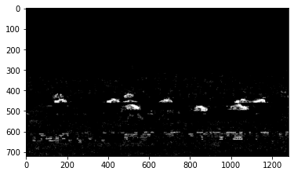

<!DOCTYPE html>
<html lang="ja" dir="auto">

<head><meta charset="utf-8">
<meta http-equiv="X-UA-Compatible" content="IE=edge">
<meta name="viewport" content="width=device-width, initial-scale=1, shrink-to-fit=no">
<meta name="robots" content="index, follow">
<title>動画データから前景と背景を分離する | MatLoverによるMatlab以外のブログ</title>
<meta name="keywords" content="OpenCV, 前景分離">
<meta name="description" content="本記事はQrunchからの転載です。
画像から前景と背景を分けるのは以前に取り上げたのですが、動画でもOpenCVで前景と背景をわけることが可能です。ここでいう前景は動いている物体を指します。
前景と背景を分離する難しさ 動画から前景と背景を分離するアルゴリズムを自分で実装するのは結構大変です。 最も単純なアルゴリズムは背景だけが写っている画像を撮っておいて、運用時には背景画像とリアルタイムに取得された画像との差分を取るというのが考えられます。 ただしこのやり方だと照明環境は一定にしないといけないのですが、問題設定によってはそうできなかったりします。また背景だけの画像を撮るのが難しい場合もあります。
問題の難しさから、リッチな処理をしたくなるのですが、変に処理をすると計算時間が伸びていく可能性もあります。
OpenCVでやってみる OpenCVのBackgroundSubtractorMOG2を使うと、簡単に照明の変化にも適応する手法を利用できます。背景画像を撮る必要もありません。 BackgroundSubtractorMOG2では背景と前景を分離するために混合ガウス分布を利用しています。 混合ガウス分布の学習はいつするの？という話ですが、これはリアルタイムに更新されていきます。リアルタイムで更新するので照明変化などにも対応できるわけですね。
今回のテスト用の動画としてこちらを利用させていただきました。 道路を車がビュンビュン走っています。
次のようにしてBackgroundSubtractorMOG2を利用できます。
import cv2 import numpy as np cap = cv2.VideoCapture(&#34;ex.mp4&#34;) fgbg = cv2.createBackgroundSubtractorMOG2(history=60, detectShadows=False) masks = [] kernel = np.ones((5, 5), np.uint8) while True: ret, frame = cap.read() if not ret: break fgmask = fgbg.apply(frame) fgmask = cv2.morphologyEx(fgmask, cv2.MORPH_OPEN, kernel) masks.append(fgmask) cap.release() cv2.destroyAllWindows() createBackgroundSubtractorMOG2に渡している引数ですが、history=60とすることで、直近の60フレームだけをモデルに考慮させているようなイメージです（正確にそうなるわけではないはずですが）。 また、detectShadows=Trueの場合には影も検出できるのですが、不要なのでFalseにしています。この機能を切っておいたほうが少し早くなります。
fgbg.apply(frame)の返り値が前景の検出結果（mask画像）になります。 ちなみに、検出された結果にオープニング処理を入れてノイズを減らしています。今回の動画ではオープニング処理を入れないと次のように結構ノイズが拾われてしまいます。
検出されたマスクにオープニング処理も入れた結果が次のとおりです（GIFが動かない場合はクリックしてみてください）。
コード全体 import cv2 import numpy as np cap = cv2.">
<meta name="author" content="">
<link rel="canonical" href="https://opqrstuvcut.github.io/blog/posts/%E5%8B%95%E7%94%BB%E3%83%87%E3%83%BC%E3%82%BF%E3%81%8B%E3%82%89%E5%89%8D%E6%99%AF%E3%81%A8%E8%83%8C%E6%99%AF%E3%82%92%E5%88%86%E9%9B%A2%E3%81%99%E3%82%8B/">
<link crossorigin="anonymous" href="/blog/assets/css/stylesheet.fc220c15db4aef0318bbf30adc45d33d4d7c88deff3238b23eb255afdc472ca6.css" integrity="sha256-/CIMFdtK7wMYu/MK3EXTPU18iN7/MjiyPrJVr9xHLKY=" rel="preload stylesheet" as="style">
<link rel="icon" href="https://opqrstuvcut.github.io/blog/favicon.ico">
<link rel="icon" type="image/png" sizes="16x16" href="https://opqrstuvcut.github.io/blog/favicon-16x16.png">
<link rel="icon" type="image/png" sizes="32x32" href="https://opqrstuvcut.github.io/blog/favicon-32x32.png">
<link rel="apple-touch-icon" href="https://opqrstuvcut.github.io/blog/apple-touch-icon.png">
<link rel="mask-icon" href="https://opqrstuvcut.github.io/blog/safari-pinned-tab.svg">
<meta name="theme-color" content="#2e2e33">
<meta name="msapplication-TileColor" content="#2e2e33">
<link rel="alternate" hreflang="ja" href="https://opqrstuvcut.github.io/blog/posts/%E5%8B%95%E7%94%BB%E3%83%87%E3%83%BC%E3%82%BF%E3%81%8B%E3%82%89%E5%89%8D%E6%99%AF%E3%81%A8%E8%83%8C%E6%99%AF%E3%82%92%E5%88%86%E9%9B%A2%E3%81%99%E3%82%8B/">
<noscript>
    <style>
        #theme-toggle,
        .top-link {
            display: none;
        }

    </style>
    <style>
        @media (prefers-color-scheme: dark) {
            :root {
                --theme: rgb(29, 30, 32);
                --entry: rgb(46, 46, 51);
                --primary: rgb(218, 218, 219);
                --secondary: rgb(155, 156, 157);
                --tertiary: rgb(65, 66, 68);
                --content: rgb(196, 196, 197);
                --code-block-bg: rgb(46, 46, 51);
                --code-bg: rgb(55, 56, 62);
                --border: rgb(51, 51, 51);
            }

            .list {
                background: var(--theme);
            }

            .list:not(.dark)::-webkit-scrollbar-track {
                background: 0 0;
            }

            .list:not(.dark)::-webkit-scrollbar-thumb {
                border-color: var(--theme);
            }
        }

    </style>
</noscript>
  
    
      
    
  

<meta property="og:title" content="動画データから前景と背景を分離する" />
<meta property="og:description" content="本記事はQrunchからの転載です。
画像から前景と背景を分けるのは以前に取り上げたのですが、動画でもOpenCVで前景と背景をわけることが可能です。ここでいう前景は動いている物体を指します。
前景と背景を分離する難しさ 動画から前景と背景を分離するアルゴリズムを自分で実装するのは結構大変です。 最も単純なアルゴリズムは背景だけが写っている画像を撮っておいて、運用時には背景画像とリアルタイムに取得された画像との差分を取るというのが考えられます。 ただしこのやり方だと照明環境は一定にしないといけないのですが、問題設定によってはそうできなかったりします。また背景だけの画像を撮るのが難しい場合もあります。
問題の難しさから、リッチな処理をしたくなるのですが、変に処理をすると計算時間が伸びていく可能性もあります。
OpenCVでやってみる OpenCVのBackgroundSubtractorMOG2を使うと、簡単に照明の変化にも適応する手法を利用できます。背景画像を撮る必要もありません。 BackgroundSubtractorMOG2では背景と前景を分離するために混合ガウス分布を利用しています。 混合ガウス分布の学習はいつするの？という話ですが、これはリアルタイムに更新されていきます。リアルタイムで更新するので照明変化などにも対応できるわけですね。
今回のテスト用の動画としてこちらを利用させていただきました。 道路を車がビュンビュン走っています。
次のようにしてBackgroundSubtractorMOG2を利用できます。
import cv2 import numpy as np cap = cv2.VideoCapture(&#34;ex.mp4&#34;) fgbg = cv2.createBackgroundSubtractorMOG2(history=60, detectShadows=False) masks = [] kernel = np.ones((5, 5), np.uint8) while True: ret, frame = cap.read() if not ret: break fgmask = fgbg.apply(frame) fgmask = cv2.morphologyEx(fgmask, cv2.MORPH_OPEN, kernel) masks.append(fgmask) cap.release() cv2.destroyAllWindows() createBackgroundSubtractorMOG2に渡している引数ですが、history=60とすることで、直近の60フレームだけをモデルに考慮させているようなイメージです（正確にそうなるわけではないはずですが）。 また、detectShadows=Trueの場合には影も検出できるのですが、不要なのでFalseにしています。この機能を切っておいたほうが少し早くなります。
fgbg.apply(frame)の返り値が前景の検出結果（mask画像）になります。 ちなみに、検出された結果にオープニング処理を入れてノイズを減らしています。今回の動画ではオープニング処理を入れないと次のように結構ノイズが拾われてしまいます。
検出されたマスクにオープニング処理も入れた結果が次のとおりです（GIFが動かない場合はクリックしてみてください）。
コード全体 import cv2 import numpy as np cap = cv2." />
<meta property="og:type" content="article" />
<meta property="og:url" content="https://opqrstuvcut.github.io/blog/posts/%E5%8B%95%E7%94%BB%E3%83%87%E3%83%BC%E3%82%BF%E3%81%8B%E3%82%89%E5%89%8D%E6%99%AF%E3%81%A8%E8%83%8C%E6%99%AF%E3%82%92%E5%88%86%E9%9B%A2%E3%81%99%E3%82%8B/" />
<meta property="og:image" content="https://opqrstuvcut.github.io/blog/posts/%E5%8B%95%E7%94%BB%E3%83%87%E3%83%BC%E3%82%BF%E3%81%8B%E3%82%89%E5%89%8D%E6%99%AF%E3%81%A8%E8%83%8C%E6%99%AF%E3%82%92%E5%88%86%E9%9B%A2%E3%81%99%E3%82%8B/feature.png" />
<meta property="article:section" content="post" />
<meta property="article:published_time" content="2020-08-20T11:04:00+09:00" />
<meta property="article:modified_time" content="2020-08-20T11:04:00+09:00" />

<meta name="twitter:card" content="summary_large_image" />
<meta name="twitter:image" content="https://opqrstuvcut.github.io/blog/posts/%E5%8B%95%E7%94%BB%E3%83%87%E3%83%BC%E3%82%BF%E3%81%8B%E3%82%89%E5%89%8D%E6%99%AF%E3%81%A8%E8%83%8C%E6%99%AF%E3%82%92%E5%88%86%E9%9B%A2%E3%81%99%E3%82%8B/feature.png" />
<meta name="twitter:title" content="動画データから前景と背景を分離する"/>
<meta name="twitter:description" content="本記事はQrunchからの転載です。
画像から前景と背景を分けるのは以前に取り上げたのですが、動画でもOpenCVで前景と背景をわけることが可能です。ここでいう前景は動いている物体を指します。
前景と背景を分離する難しさ 動画から前景と背景を分離するアルゴリズムを自分で実装するのは結構大変です。 最も単純なアルゴリズムは背景だけが写っている画像を撮っておいて、運用時には背景画像とリアルタイムに取得された画像との差分を取るというのが考えられます。 ただしこのやり方だと照明環境は一定にしないといけないのですが、問題設定によってはそうできなかったりします。また背景だけの画像を撮るのが難しい場合もあります。
問題の難しさから、リッチな処理をしたくなるのですが、変に処理をすると計算時間が伸びていく可能性もあります。
OpenCVでやってみる OpenCVのBackgroundSubtractorMOG2を使うと、簡単に照明の変化にも適応する手法を利用できます。背景画像を撮る必要もありません。 BackgroundSubtractorMOG2では背景と前景を分離するために混合ガウス分布を利用しています。 混合ガウス分布の学習はいつするの？という話ですが、これはリアルタイムに更新されていきます。リアルタイムで更新するので照明変化などにも対応できるわけですね。
今回のテスト用の動画としてこちらを利用させていただきました。 道路を車がビュンビュン走っています。
次のようにしてBackgroundSubtractorMOG2を利用できます。
import cv2 import numpy as np cap = cv2.VideoCapture(&#34;ex.mp4&#34;) fgbg = cv2.createBackgroundSubtractorMOG2(history=60, detectShadows=False) masks = [] kernel = np.ones((5, 5), np.uint8) while True: ret, frame = cap.read() if not ret: break fgmask = fgbg.apply(frame) fgmask = cv2.morphologyEx(fgmask, cv2.MORPH_OPEN, kernel) masks.append(fgmask) cap.release() cv2.destroyAllWindows() createBackgroundSubtractorMOG2に渡している引数ですが、history=60とすることで、直近の60フレームだけをモデルに考慮させているようなイメージです（正確にそうなるわけではないはずですが）。 また、detectShadows=Trueの場合には影も検出できるのですが、不要なのでFalseにしています。この機能を切っておいたほうが少し早くなります。
fgbg.apply(frame)の返り値が前景の検出結果（mask画像）になります。 ちなみに、検出された結果にオープニング処理を入れてノイズを減らしています。今回の動画ではオープニング処理を入れないと次のように結構ノイズが拾われてしまいます。
検出されたマスクにオープニング処理も入れた結果が次のとおりです（GIFが動かない場合はクリックしてみてください）。
コード全体 import cv2 import numpy as np cap = cv2."/>


<script type="application/ld+json">
{
  "@context": "https://schema.org",
  "@type": "BreadcrumbList",
  "itemListElement": [
    {
      "@type": "ListItem",
      "position":  1 ,
      "name": "Posts",
      "item": "https://opqrstuvcut.github.io/blog/post/"
    }, 
    {
      "@type": "ListItem",
      "position":  2 ,
      "name": "動画データから前景と背景を分離する",
      "item": "https://opqrstuvcut.github.io/blog/posts/%E5%8B%95%E7%94%BB%E3%83%87%E3%83%BC%E3%82%BF%E3%81%8B%E3%82%89%E5%89%8D%E6%99%AF%E3%81%A8%E8%83%8C%E6%99%AF%E3%82%92%E5%88%86%E9%9B%A2%E3%81%99%E3%82%8B/"
    }
  ]
}
</script>
<script type="application/ld+json">
{
  "@context": "https://schema.org",
  "@type": "BlogPosting",
  "headline": "動画データから前景と背景を分離する",
  "name": "動画データから前景と背景を分離する",
  "description": "本記事はQrunchからの転載です。\n画像から前景と背景を分けるのは以前に取り上げたのですが、動画でもOpenCVで前景と背景をわけることが可能です。ここでいう前景は動いている物体を指します。\n前景と背景を分離する難しさ 動画から前景と背景を分離するアルゴリズムを自分で実装するのは結構大変です。 最も単純なアルゴリズムは背景だけが写っている画像を撮っておいて、運用時には背景画像とリアルタイムに取得された画像との差分を取るというのが考えられます。 ただしこのやり方だと照明環境は一定にしないといけないのですが、問題設定によってはそうできなかったりします。また背景だけの画像を撮るのが難しい場合もあります。\n問題の難しさから、リッチな処理をしたくなるのですが、変に処理をすると計算時間が伸びていく可能性もあります。\nOpenCVでやってみる OpenCVのBackgroundSubtractorMOG2を使うと、簡単に照明の変化にも適応する手法を利用できます。背景画像を撮る必要もありません。 BackgroundSubtractorMOG2では背景と前景を分離するために混合ガウス分布を利用しています。 混合ガウス分布の学習はいつするの？という話ですが、これはリアルタイムに更新されていきます。\bリアルタイムで更新するので照明変化などにも対応できるわけですね。\n今回のテスト用の動画としてこちらを利用させていただきました。 道路を車がビュンビュン走っています。\n次のようにしてBackgroundSubtractorMOG2を利用できます。\nimport cv2 import numpy as np cap = cv2.VideoCapture(\u0026#34;ex.mp4\u0026#34;) fgbg = cv2.createBackgroundSubtractorMOG2(history=60, detectShadows=False) masks = [] kernel = np.ones((5, 5), np.uint8) while True: ret, frame = cap.read() if not ret: break fgmask = fgbg.apply(frame) fgmask = cv2.morphologyEx(fgmask, cv2.MORPH_OPEN, kernel) masks.append(fgmask) cap.release() cv2.destroyAllWindows() createBackgroundSubtractorMOG2に渡している引数ですが、history=60とすることで、直近の60フレームだけをモデルに考慮させているようなイメージです（正確にそうなるわけではないはずですが）。 また、detectShadows=Trueの場合には影も検出できるのですが、不要なのでFalseにしています。この機能を切っておいたほうが少し早くなります。\nfgbg.apply(frame)の返り値が前景の検出結果（mask画像）になります。 ちなみに、検出された結果にオープニング処理を入れてノイズを減らしています。今回の動画ではオープニング処理を入れないと次のように結構ノイズが拾われてしまいます。\n検出されたマスクにオープニング処理も入れた結果が次のとおりです（GIFが動かない場合はクリックしてみてください）。\nコード全体 import cv2 import numpy as np cap = cv2.",
  "keywords": [
    "OpenCV", "前景分離"
  ],
  "articleBody": "本記事はQrunchからの転載です。\n画像から前景と背景を分けるのは以前に取り上げたのですが、動画でもOpenCVで前景と背景をわけることが可能です。ここでいう前景は動いている物体を指します。\n前景と背景を分離する難しさ 動画から前景と背景を分離するアルゴリズムを自分で実装するのは結構大変です。 最も単純なアルゴリズムは背景だけが写っている画像を撮っておいて、運用時には背景画像とリアルタイムに取得された画像との差分を取るというのが考えられます。 ただしこのやり方だと照明環境は一定にしないといけないのですが、問題設定によってはそうできなかったりします。また背景だけの画像を撮るのが難しい場合もあります。\n問題の難しさから、リッチな処理をしたくなるのですが、変に処理をすると計算時間が伸びていく可能性もあります。\nOpenCVでやってみる OpenCVのBackgroundSubtractorMOG2を使うと、簡単に照明の変化にも適応する手法を利用できます。背景画像を撮る必要もありません。 BackgroundSubtractorMOG2では背景と前景を分離するために混合ガウス分布を利用しています。 混合ガウス分布の学習はいつするの？という話ですが、これはリアルタイムに更新されていきます。\bリアルタイムで更新するので照明変化などにも対応できるわけですね。\n今回のテスト用の動画としてこちらを利用させていただきました。 道路を車がビュンビュン走っています。\n次のようにしてBackgroundSubtractorMOG2を利用できます。\nimport cv2 import numpy as np cap = cv2.VideoCapture(\"ex.mp4\") fgbg = cv2.createBackgroundSubtractorMOG2(history=60, detectShadows=False) masks = [] kernel = np.ones((5, 5), np.uint8) while True: ret, frame = cap.read() if not ret: break fgmask = fgbg.apply(frame) fgmask = cv2.morphologyEx(fgmask, cv2.MORPH_OPEN, kernel) masks.append(fgmask) cap.release() cv2.destroyAllWindows() createBackgroundSubtractorMOG2に渡している引数ですが、history=60とすることで、直近の60フレームだけをモデルに考慮させているようなイメージです（正確にそうなるわけではないはずですが）。 また、detectShadows=Trueの場合には影も検出できるのですが、不要なのでFalseにしています。この機能を切っておいたほうが少し早くなります。\nfgbg.apply(frame)の返り値が前景の検出結果（mask画像）になります。 ちなみに、検出された結果にオープニング処理を入れてノイズを減らしています。今回の動画ではオープニング処理を入れないと次のように結構ノイズが拾われてしまいます。\n検出されたマスクにオープニング処理も入れた結果が次のとおりです（GIFが動かない場合はクリックしてみてください）。\nコード全体 import cv2 import numpy as np cap = cv2.VideoCapture(\"ex.mp4\") fgbg = cv2.createBackgroundSubtractorMOG2(history=60, detectShadows=False) masks = [] kernel = np.ones((5, 5), np.uint8) while True: ret, frame = cap.read() if not ret: break fgmask = fgbg.apply(frame) fgmask = cv2.morphologyEx(fgmask, cv2.MORPH_OPEN, kernel) masks.append(fgmask) cv2.imshow('frame', fgmask) k = cv2.waitKey(30) if k == ord('q'): break cap.release() cv2.destroyAllWindows() fourcc = cv2.VideoWriter_fourcc(\"m\", \"p\", \"4\", \"v\") writer = cv2.VideoWriter(\"res.mp4\", fourcc, 30, tuple(masks[0].shape[::-1]), 0) for mask in masks: writer.write(mask) writer.release() ",
  "wordCount" : "133",
  "inLanguage": "ja",
  "image": "https://opqrstuvcut.github.io/blog/posts/%E5%8B%95%E7%94%BB%E3%83%87%E3%83%BC%E3%82%BF%E3%81%8B%E3%82%89%E5%89%8D%E6%99%AF%E3%81%A8%E8%83%8C%E6%99%AF%E3%82%92%E5%88%86%E9%9B%A2%E3%81%99%E3%82%8B/feature.png","datePublished": "2020-08-20T11:04:00+09:00",
  "dateModified": "2020-08-20T11:04:00+09:00",
  "mainEntityOfPage": {
    "@type": "WebPage",
    "@id": "https://opqrstuvcut.github.io/blog/posts/%E5%8B%95%E7%94%BB%E3%83%87%E3%83%BC%E3%82%BF%E3%81%8B%E3%82%89%E5%89%8D%E6%99%AF%E3%81%A8%E8%83%8C%E6%99%AF%E3%82%92%E5%88%86%E9%9B%A2%E3%81%99%E3%82%8B/"
  },
  "publisher": {
    "@type": "Organization",
    "name": "MatLoverによるMatlab以外のブログ",
    "logo": {
      "@type": "ImageObject",
      "url": "https://opqrstuvcut.github.io/blog/favicon.ico"
    }
  }
}
</script>
</head>

<body class="" id="top">
<script>
    if (localStorage.getItem("pref-theme") === "dark") {
        document.body.classList.add('dark');
    } else if (localStorage.getItem("pref-theme") === "light") {
        document.body.classList.remove('dark')
    } else if (window.matchMedia('(prefers-color-scheme: dark)').matches) {
        document.body.classList.add('dark');
    }

</script>

<header class="header">
    <nav class="nav">
        <div class="logo">
            <a href="https://opqrstuvcut.github.io/blog/" accesskey="h" title="MatLoverによるMatlab以外のブログ (Alt + H)">MatLoverによるMatlab以外のブログ</a>
            <div class="logo-switches">
                <button id="theme-toggle" accesskey="t" title="(Alt + T)">
                    <svg id="moon" xmlns="http://www.w3.org/2000/svg" width="24" height="18" viewBox="0 0 24 24"
                        fill="none" stroke="currentColor" stroke-width="2" stroke-linecap="round"
                        stroke-linejoin="round">
                        <path d="M21 12.79A9 9 0 1 1 11.21 3 7 7 0 0 0 21 12.79z"></path>
                    </svg>
                    <svg id="sun" xmlns="http://www.w3.org/2000/svg" width="24" height="18" viewBox="0 0 24 24"
                        fill="none" stroke="currentColor" stroke-width="2" stroke-linecap="round"
                        stroke-linejoin="round">
                        <circle cx="12" cy="12" r="5"></circle>
                        <line x1="12" y1="1" x2="12" y2="3"></line>
                        <line x1="12" y1="21" x2="12" y2="23"></line>
                        <line x1="4.22" y1="4.22" x2="5.64" y2="5.64"></line>
                        <line x1="18.36" y1="18.36" x2="19.78" y2="19.78"></line>
                        <line x1="1" y1="12" x2="3" y2="12"></line>
                        <line x1="21" y1="12" x2="23" y2="12"></line>
                        <line x1="4.22" y1="19.78" x2="5.64" y2="18.36"></line>
                        <line x1="18.36" y1="5.64" x2="19.78" y2="4.22"></line>
                    </svg>
                </button>
            </div>
        </div>
        <ul id="menu">
            <li>
                <a href="https://opqrstuvcut.github.io/blog/" title="Home">
                    <span>homeHome</span>
                </a>
            </li>
            <li>
                <a href="https://opqrstuvcut.github.io/blog/archives" title="Archives">
                    <span>archivesArchives</span>
                </a>
            </li>
            <li>
                <a href="https://opqrstuvcut.github.io/blog/search" title="Search (Alt &#43; /)" accesskey=/>
                    <span>searchSearch</span>
                </a>
            </li>
        </ul>
    </nav>
</header>
<main class="main">

<article class="post-single">
  <header class="post-header">
    
    <h1 class="post-title entry-hint-parent">
      動画データから前景と背景を分離する
    </h1>
    <div class="post-meta"><span title='2020-08-20 11:04:00 +0900 JST'>8月 20, 2020</span>

</div>
  </header> 
  <div class="post-content"><p>本記事はQrunchからの転載です。</p>
<hr>
<p>画像から前景と背景を分けるのは以前に取り上げたのですが、動画でもOpenCVで前景と背景をわけることが可能です。ここでいう前景は動いている物体を指します。</p>
<h1 id="前景と背景を分離する難しさ">前景と背景を分離する難しさ<a hidden class="anchor" aria-hidden="true" href="#前景と背景を分離する難しさ">#</a></h1>
<p>動画から前景と背景を分離するアルゴリズムを自分で実装するのは結構大変です。
最も単純なアルゴリズムは背景だけが写っている画像を撮っておいて、運用時には背景画像とリアルタイムに取得された画像との差分を取るというのが考えられます。
ただしこのやり方だと照明環境は一定にしないといけないのですが、問題設定によってはそうできなかったりします。また背景だけの画像を撮るのが難しい場合もあります。</p>
<p>問題の難しさから、リッチな処理をしたくなるのですが、変に処理をすると計算時間が伸びていく可能性もあります。</p>
<h1 id="opencvでやってみる">OpenCVでやってみる<a hidden class="anchor" aria-hidden="true" href="#opencvでやってみる">#</a></h1>
<p>OpenCVの<strong>BackgroundSubtractorMOG2</strong>を使うと、簡単に照明の変化にも適応する手法を利用できます。背景画像を撮る必要もありません。
BackgroundSubtractorMOG2では背景と前景を分離するために混合ガウス分布を利用しています。
混合ガウス分布の学習はいつするの？という話ですが、これはリアルタイムに更新されていきます。リアルタイムで更新するので照明変化などにも対応できるわけですね。</p>
<p>今回のテスト用の動画として<a href="https://pixabay.com/ja/videos/%E9%80%9A%E3%82%8A-%E3%83%88%E3%83%A9%E3%83%95%E3%82%A3%E3%83%83%E3%82%AF-%E9%89%84%E9%81%93-%E8%BB%8A-3572/">こちら</a>を利用させていただきました。
道路を車がビュンビュン走っています。</p>
<p>次のようにしてBackgroundSubtractorMOG2を利用できます。</p>
<div class="highlight"><pre tabindex="0" class="chroma"><code class="language-Python" data-lang="Python"><span class="line"><span class="cl"><span class="kn">import</span> <span class="nn">cv2</span>
</span></span><span class="line"><span class="cl"><span class="kn">import</span> <span class="nn">numpy</span> <span class="k">as</span> <span class="nn">np</span>
</span></span><span class="line"><span class="cl">
</span></span><span class="line"><span class="cl"><span class="n">cap</span> <span class="o">=</span> <span class="n">cv2</span><span class="o">.</span><span class="n">VideoCapture</span><span class="p">(</span><span class="s2">&#34;ex.mp4&#34;</span><span class="p">)</span>
</span></span><span class="line"><span class="cl"><span class="n">fgbg</span> <span class="o">=</span> <span class="n">cv2</span><span class="o">.</span><span class="n">createBackgroundSubtractorMOG2</span><span class="p">(</span><span class="n">history</span><span class="o">=</span><span class="mi">60</span><span class="p">,</span> 
</span></span><span class="line"><span class="cl">                                          <span class="n">detectShadows</span><span class="o">=</span><span class="kc">False</span><span class="p">)</span>
</span></span><span class="line"><span class="cl"><span class="n">masks</span> <span class="o">=</span> <span class="p">[]</span>
</span></span><span class="line"><span class="cl"><span class="n">kernel</span> <span class="o">=</span> <span class="n">np</span><span class="o">.</span><span class="n">ones</span><span class="p">((</span><span class="mi">5</span><span class="p">,</span> <span class="mi">5</span><span class="p">),</span> <span class="n">np</span><span class="o">.</span><span class="n">uint8</span><span class="p">)</span>
</span></span><span class="line"><span class="cl">
</span></span><span class="line"><span class="cl"><span class="k">while</span> <span class="kc">True</span><span class="p">:</span>
</span></span><span class="line"><span class="cl">    <span class="n">ret</span><span class="p">,</span> <span class="n">frame</span> <span class="o">=</span> <span class="n">cap</span><span class="o">.</span><span class="n">read</span><span class="p">()</span>
</span></span><span class="line"><span class="cl">    <span class="k">if</span> <span class="ow">not</span> <span class="n">ret</span><span class="p">:</span>
</span></span><span class="line"><span class="cl">        <span class="k">break</span>
</span></span><span class="line"><span class="cl">    <span class="n">fgmask</span> <span class="o">=</span> <span class="n">fgbg</span><span class="o">.</span><span class="n">apply</span><span class="p">(</span><span class="n">frame</span><span class="p">)</span>
</span></span><span class="line"><span class="cl">    <span class="n">fgmask</span> <span class="o">=</span> <span class="n">cv2</span><span class="o">.</span><span class="n">morphologyEx</span><span class="p">(</span><span class="n">fgmask</span><span class="p">,</span> <span class="n">cv2</span><span class="o">.</span><span class="n">MORPH_OPEN</span><span class="p">,</span> <span class="n">kernel</span><span class="p">)</span>
</span></span><span class="line"><span class="cl">    <span class="n">masks</span><span class="o">.</span><span class="n">append</span><span class="p">(</span><span class="n">fgmask</span><span class="p">)</span>
</span></span><span class="line"><span class="cl">
</span></span><span class="line"><span class="cl"><span class="n">cap</span><span class="o">.</span><span class="n">release</span><span class="p">()</span>
</span></span><span class="line"><span class="cl"><span class="n">cv2</span><span class="o">.</span><span class="n">destroyAllWindows</span><span class="p">()</span>
</span></span></code></pre></div><p>createBackgroundSubtractorMOG2に渡している引数ですが、history=60とすることで、直近の60フレームだけをモデルに考慮させているようなイメージです（正確にそうなるわけではないはずですが）。
また、detectShadows=Trueの場合には影も検出できるのですが、不要なのでFalseにしています。この機能を切っておいたほうが少し早くなります。</p>
<p>fgbg.apply(frame)の返り値が前景の検出結果（mask画像）になります。
ちなみに、検出された結果にオープニング処理を入れてノイズを減らしています。今回の動画ではオープニング処理を入れないと次のように結構ノイズが拾われてしまいます。<br>

<br>
検出されたマスクにオープニング処理も入れた結果が次のとおりです（GIFが動かない場合はクリックしてみてください）。<br>


	
	<a href="/blog/posts/%E5%8B%95%E7%94%BB%E3%83%87%E3%83%BC%E3%82%BF%E3%81%8B%E3%82%89%E5%89%8D%E6%99%AF%E3%81%A8%E8%83%8C%E6%99%AF%E3%82%92%E5%88%86%E9%9B%A2%E3%81%99%E3%82%8B/64655766adf52c23bb49f969edd92526.gif">
	
	</a>

</p>
<h1 id="コード全体">コード全体<a hidden class="anchor" aria-hidden="true" href="#コード全体">#</a></h1>
<div class="highlight"><pre tabindex="0" class="chroma"><code class="language-Python" data-lang="Python"><span class="line"><span class="cl"><span class="kn">import</span> <span class="nn">cv2</span>
</span></span><span class="line"><span class="cl"><span class="kn">import</span> <span class="nn">numpy</span> <span class="k">as</span> <span class="nn">np</span>
</span></span><span class="line"><span class="cl">
</span></span><span class="line"><span class="cl"><span class="n">cap</span> <span class="o">=</span> <span class="n">cv2</span><span class="o">.</span><span class="n">VideoCapture</span><span class="p">(</span><span class="s2">&#34;ex.mp4&#34;</span><span class="p">)</span>
</span></span><span class="line"><span class="cl"><span class="n">fgbg</span> <span class="o">=</span> <span class="n">cv2</span><span class="o">.</span><span class="n">createBackgroundSubtractorMOG2</span><span class="p">(</span><span class="n">history</span><span class="o">=</span><span class="mi">60</span><span class="p">,</span>
</span></span><span class="line"><span class="cl">                                          <span class="n">detectShadows</span><span class="o">=</span><span class="kc">False</span><span class="p">)</span>
</span></span><span class="line"><span class="cl"><span class="n">masks</span> <span class="o">=</span> <span class="p">[]</span>
</span></span><span class="line"><span class="cl"><span class="n">kernel</span> <span class="o">=</span> <span class="n">np</span><span class="o">.</span><span class="n">ones</span><span class="p">((</span><span class="mi">5</span><span class="p">,</span> <span class="mi">5</span><span class="p">),</span> <span class="n">np</span><span class="o">.</span><span class="n">uint8</span><span class="p">)</span>
</span></span><span class="line"><span class="cl">
</span></span><span class="line"><span class="cl"><span class="k">while</span> <span class="kc">True</span><span class="p">:</span>
</span></span><span class="line"><span class="cl">    <span class="n">ret</span><span class="p">,</span> <span class="n">frame</span> <span class="o">=</span> <span class="n">cap</span><span class="o">.</span><span class="n">read</span><span class="p">()</span>
</span></span><span class="line"><span class="cl">    <span class="k">if</span> <span class="ow">not</span> <span class="n">ret</span><span class="p">:</span>
</span></span><span class="line"><span class="cl">        <span class="k">break</span>
</span></span><span class="line"><span class="cl">    <span class="n">fgmask</span> <span class="o">=</span> <span class="n">fgbg</span><span class="o">.</span><span class="n">apply</span><span class="p">(</span><span class="n">frame</span><span class="p">)</span>
</span></span><span class="line"><span class="cl">    <span class="n">fgmask</span> <span class="o">=</span> <span class="n">cv2</span><span class="o">.</span><span class="n">morphologyEx</span><span class="p">(</span><span class="n">fgmask</span><span class="p">,</span> <span class="n">cv2</span><span class="o">.</span><span class="n">MORPH_OPEN</span><span class="p">,</span> <span class="n">kernel</span><span class="p">)</span>
</span></span><span class="line"><span class="cl">    <span class="n">masks</span><span class="o">.</span><span class="n">append</span><span class="p">(</span><span class="n">fgmask</span><span class="p">)</span>
</span></span><span class="line"><span class="cl">
</span></span><span class="line"><span class="cl">    <span class="n">cv2</span><span class="o">.</span><span class="n">imshow</span><span class="p">(</span><span class="s1">&#39;frame&#39;</span><span class="p">,</span> <span class="n">fgmask</span><span class="p">)</span>
</span></span><span class="line"><span class="cl">
</span></span><span class="line"><span class="cl">    <span class="n">k</span> <span class="o">=</span> <span class="n">cv2</span><span class="o">.</span><span class="n">waitKey</span><span class="p">(</span><span class="mi">30</span><span class="p">)</span>
</span></span><span class="line"><span class="cl">    <span class="k">if</span> <span class="n">k</span> <span class="o">==</span> <span class="nb">ord</span><span class="p">(</span><span class="s1">&#39;q&#39;</span><span class="p">):</span>
</span></span><span class="line"><span class="cl">        <span class="k">break</span>
</span></span><span class="line"><span class="cl">
</span></span><span class="line"><span class="cl"><span class="n">cap</span><span class="o">.</span><span class="n">release</span><span class="p">()</span>
</span></span><span class="line"><span class="cl"><span class="n">cv2</span><span class="o">.</span><span class="n">destroyAllWindows</span><span class="p">()</span>
</span></span><span class="line"><span class="cl">
</span></span><span class="line"><span class="cl"><span class="n">fourcc</span> <span class="o">=</span> <span class="n">cv2</span><span class="o">.</span><span class="n">VideoWriter_fourcc</span><span class="p">(</span><span class="s2">&#34;m&#34;</span><span class="p">,</span> <span class="s2">&#34;p&#34;</span><span class="p">,</span> <span class="s2">&#34;4&#34;</span><span class="p">,</span> <span class="s2">&#34;v&#34;</span><span class="p">)</span>
</span></span><span class="line"><span class="cl"><span class="n">writer</span> <span class="o">=</span> <span class="n">cv2</span><span class="o">.</span><span class="n">VideoWriter</span><span class="p">(</span><span class="s2">&#34;res.mp4&#34;</span><span class="p">,</span>
</span></span><span class="line"><span class="cl">                         <span class="n">fourcc</span><span class="p">,</span>
</span></span><span class="line"><span class="cl">                         <span class="mi">30</span><span class="p">,</span>
</span></span><span class="line"><span class="cl">                         <span class="nb">tuple</span><span class="p">(</span><span class="n">masks</span><span class="p">[</span><span class="mi">0</span><span class="p">]</span><span class="o">.</span><span class="n">shape</span><span class="p">[::</span><span class="o">-</span><span class="mi">1</span><span class="p">]),</span>
</span></span><span class="line"><span class="cl">                         <span class="mi">0</span><span class="p">)</span>
</span></span><span class="line"><span class="cl"><span class="k">for</span> <span class="n">mask</span> <span class="ow">in</span> <span class="n">masks</span><span class="p">:</span>
</span></span><span class="line"><span class="cl">    <span class="n">writer</span><span class="o">.</span><span class="n">write</span><span class="p">(</span><span class="n">mask</span><span class="p">)</span>
</span></span><span class="line"><span class="cl">
</span></span><span class="line"><span class="cl"><span class="n">writer</span><span class="o">.</span><span class="n">release</span><span class="p">()</span>
</span></span></code></pre></div>

  </div>

  <footer class="post-footer">
    <ul class="post-tags">
      <li><a href="https://opqrstuvcut.github.io/blog/tags/opencv/">OpenCV</a></li>
      <li><a href="https://opqrstuvcut.github.io/blog/tags/%E5%89%8D%E6%99%AF%E5%88%86%E9%9B%A2/">前景分離</a></li>
    </ul>
  </footer>
</article>
    </main>
    
<footer class="footer">
        <span>&copy; 2024 <a href="https://opqrstuvcut.github.io/blog/">MatLoverによるMatlab以外のブログ</a></span> · 

    <span>
        Powered by
        <a href="https://gohugo.io/" rel="noopener noreferrer" target="_blank">Hugo</a> &
        <a href="https://github.com/adityatelange/hugo-PaperMod/" rel="noopener" target="_blank">PaperMod</a>
    </span>
</footer>
<a href="#top" aria-label="go to top" title="Go to Top (Alt + G)" class="top-link" id="top-link" accesskey="g">
    <svg xmlns="http://www.w3.org/2000/svg" viewBox="0 0 12 6" fill="currentColor">
        <path d="M12 6H0l6-6z" />
    </svg>
</a>

<script>
    let menu = document.getElementById('menu')
    if (menu) {
        menu.scrollLeft = localStorage.getItem("menu-scroll-position");
        menu.onscroll = function () {
            localStorage.setItem("menu-scroll-position", menu.scrollLeft);
        }
    }

    document.querySelectorAll('a[href^="#"]').forEach(anchor => {
        anchor.addEventListener("click", function (e) {
            e.preventDefault();
            var id = this.getAttribute("href").substr(1);
            if (!window.matchMedia('(prefers-reduced-motion: reduce)').matches) {
                document.querySelector(`[id='${decodeURIComponent(id)}']`).scrollIntoView({
                    behavior: "smooth"
                });
            } else {
                document.querySelector(`[id='${decodeURIComponent(id)}']`).scrollIntoView();
            }
            if (id === "top") {
                history.replaceState(null, null, " ");
            } else {
                history.pushState(null, null, `#${id}`);
            }
        });
    });

</script>
<script>
    var mybutton = document.getElementById("top-link");
    window.onscroll = function () {
        if (document.body.scrollTop > 800 || document.documentElement.scrollTop > 800) {
            mybutton.style.visibility = "visible";
            mybutton.style.opacity = "1";
        } else {
            mybutton.style.visibility = "hidden";
            mybutton.style.opacity = "0";
        }
    };

</script>
<script>
    document.getElementById("theme-toggle").addEventListener("click", () => {
        if (document.body.className.includes("dark")) {
            document.body.classList.remove('dark');
            localStorage.setItem("pref-theme", 'light');
        } else {
            document.body.classList.add('dark');
            localStorage.setItem("pref-theme", 'dark');
        }
    })

</script>
</body>

</html>
